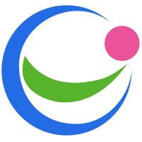
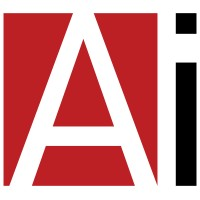

CMO. Operator of things that don’t fit neatly into job descriptions.
I started in marketing. Somewhere along the way, the borders got blurry.
Today I build the story, the brand and the growth engine, but I also design product flows, build automations, QA what we ship, work directly with developers (and yes, I’ve even developed a few things myself :)), manage people, talk to customers and step into sales when that’s where the company needs me.
AI has changed what I’m able to take on. I use it deeply across strategy, research, product, design, automation, creative work and execution, and I’ve become very good at learning whatever I need to learn next. Fast.
That’s probably the biggest shift in me over the last few years: I stopped thinking in terms of what belongs to my role.
If something needs to exist, work better, look better, sell better or simply get done, I’m usually already figuring out how.
I’m still a marketer at heart. I just became considerably harder to put in a box.
Now
Chief Marketing Officer (CMO)
RatingIQ · Raanana · 2026–Present
RatingIQ is probably where my job description officially stopped being useful.
Repositioned the company from a review-management tool into a Rating-Performance System for hotels, building the category, brand, messaging and commercial narrative around the impact of reputation on rankings, bookings, room revenue and pricing performance.
Built the company’s digital presence from scratch, strategy, architecture, copy, creative direction and hands-on website execution, alongside the broader brand system and market-facing identity.
Expanded deeply into product, designing UX/UI flows, shaping features around real hotel operational needs, working directly with development and taking an active role in product QA before things reached customers.
Made AI and automation part of how I work, not a side tool: using AI across strategy, research, product, design and creative production, while personally building automations for social channels and broader marketing workflows.
Built and led the growth engine from positioning through pipeline, spanning content, outbound, acquisition, sales enablement and customer communication, then stepped directly into sales conversations to help turn interest into opportunities and revenue.
Managed interns and cross-functional initiatives while staying deliberately hands-on. Strategy when strategy was needed. Execution when execution was needed. Occasionally both before lunch.
Before That
Head of Marketing
Peech-ai · Raanana · 2025–2026
I came in to fix the story. The numbers followed.
Joined as the first marketing hire and rebuilt the company’s positioning, ICPs, messaging and GTM narrative from the ground up, aligning product, sales, leadership, board members and investors around one story.
Launched a new hero homepage in roughly 7 days, generating approximately 78 organic inbound leads within days and converting early demand into around 20 booked sales calls before any paid campaigns launched.
Built the founder-led authority strategy, content direction and narrative that positioned the CEO as a credible category voice rather than another founder posting because LinkedIn said he should.
Created the core commercial infrastructure around the story: sales, board and internal decks; seven marketing videos; the company’s first strategic content playbook; segmented email sequences; campaign concepts and landing-page architecture.
Explored new GTM routes, partnerships and distribution opportunities beyond traditional SaaS buyers, while running marketing end-to-end as a solo operator under a $20K monthly budget and spending less than half of it.
Owned strategy, execution, analytics and sales alignment in an early-stage environment where speed mattered, but clarity mattered more.
Running it solo didn’t make the job smaller. It just meant every part of it ran through me.
The Building Years
Head of Marketing
Crow · Airport City · 2024–2025
This was the first role where I really learned what building marketing from zero feels like, and where I first felt completely on top of my game.
Joined at an early growth stage and built the company’s marketing foundation from scratch, defining positioning, messaging and the brand narrative for a competitive B2B market.
Translated a complex product into a clearer commercial story, strengthening sales conversations and market credibility within the first months.
Built and executed campaigns, content, sales materials, event presence and digital assets in-house, without waiting on an agency or a bigger team to do it.
Worked closely with sales and leadership, treating marketing as part of the revenue operation rather than a department waiting for briefs.
Built relationships with partners, vendors and prospects while learning the part of startup marketing I now value most: ownership usually matters more than resources.

The Global Years
Senior Global Marketing Manager
Essence Group · Herzliya · 2021–2024
Before startup life made me allergic to narrow job descriptions, I learned how to operate globally.
Led marketing initiatives across 20+ international markets and multiple product lines spanning IoT Security, SmartCare and Medical Cosmetics.
Adapted positioning, messaging and GTM activity to different regions, regulations, buyer personas and commercial realities.
Supported launches and rebranding initiatives and created sales-enablement materials including case studies, videos, brochures and whitepapers.
Planned and executed major international exhibitions and conferences, working across sales, product, regional teams and external suppliers.
Launched a new corporate website designed around sales and inbound demand, contributing to an estimated 25% improvement in lead quality and engagement.
Defined and orchestrated Essence’s first partners program, my earliest hands-on step into product management, built to extend reach and keep execution consistent across every market.
Produced product videos, customer testimonials and marketing videos in-house, rather than outsourcing the company’s visual storytelling.
Built the kind of cross-market experience that later made early-stage chaos feel surprisingly manageable.

Marketing Communications Manager
AiTechSystems · Kfar Saba · 2018–2021
This is where the foundation was built.
Developed integrated marketing campaigns across international markets, creating industry-specific messaging and thought-leadership content.
Led branding and content for exhibitions, webinars and product showcases while managing multilingual, market-specific communication.
Used traffic, engagement and lead data to continuously improve digital performance, conversion and retention.
Learned how brand, content, sales and customer relationships connect long before I started giving those connections fancy strategic names.
Education
BA, Interior Design
Istituto Europeo Di Design · Barcelona, Spain
Academic Degree, Culinary Arts
Tadmor Academy · Herzliya, Israel
Languages
HebrewNative
EnglishNative level
SpanishBasic
RussianBasic
Yes, marketing came later. No, neither degree was wasted.